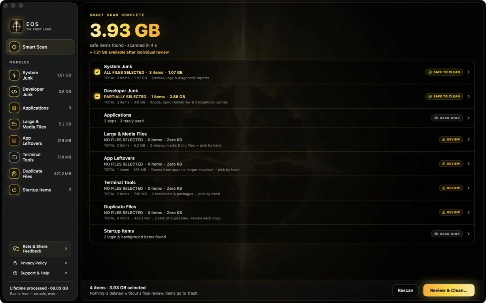
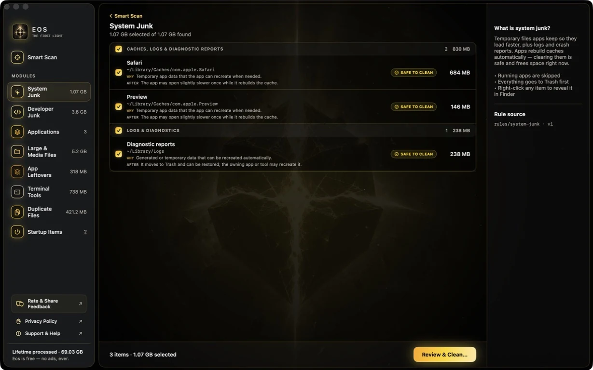

Xcode and developer caches
Find Xcode Derived Data, simulator caches and old device support, along with Homebrew, npm, CocoaPods and other package manager caches.
Mac · macOS 14 or later
Find Xcode caches, large files, duplicates and app leftovers. Eos explains what each result is so you can decide what to remove.
Free · No ads or subscriptions · Scans run on your Mac

Run a scan, open a category, and review the files and consequences before you clear anything.
Find Xcode Derived Data, simulator caches and old device support, along with Homebrew, npm, CocoaPods and other package manager caches.
Sort large video, audio and other files by size. Eos verifies exact duplicates by matching file content, so you can choose which copies to keep.
Review unused apps, their associated files, logs and user caches. Eos also surfaces supported terminal tools and startup items for inspection.
Open a scan result to see why it can be removed and what will happen afterward. Some caches are rebuilt by the app that created them, and some package files may need to be downloaded again.

Yes. Eos identifies Derived Data, simulator caches and old device support. Review the details before removing anything you may need for a future build or device.
Eos checks file content using hashes so it can surface exact copies. Review their locations and choose which files to keep.
You choose which items to remove and confirm cleanup. Files go to the Trash by default.
Eos runs scans and cleanup locally on your Mac and does not use a developer server, analytics or an app account.